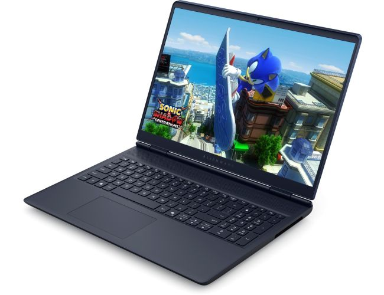
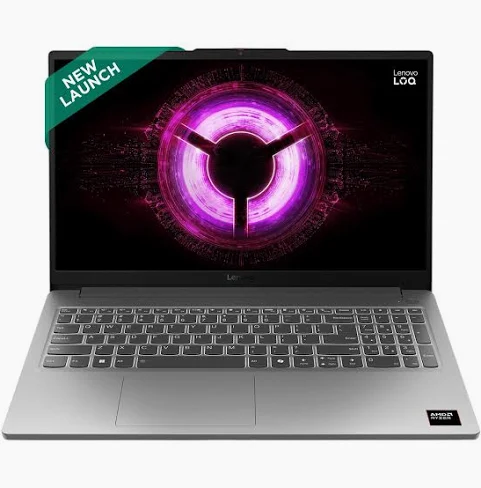

The LOQ has been my favorite budget gaming laptop since 2023, and it got even better in 2024 while the competition hasn’t really caught up yet. The LOQ has a nicer build quality relative to its competitors, and this year Lenovo removed the air exhaust vents on the sides – so no more hot mouse hand while gaming. There are even some premium features that more expensive gaming laptops are missing, such as advanced optimus and even G-Sync.